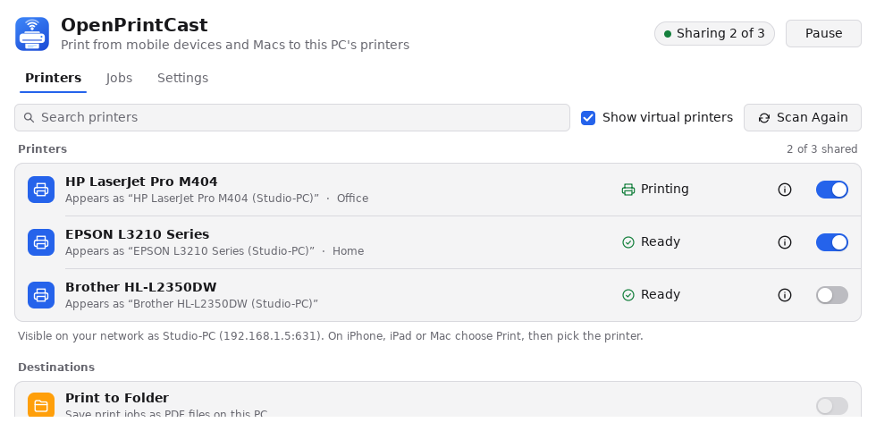

Your existing printers
Paper size, color, duplex, page ranges and copies, when the driver supports them.
OpenPrintCast shares the printers on your PC as AirPrint and IPP Everywhere printers. iPhone, iPad, Mac and Android find them automatically. There is nothing to install on the device.
Latest release · Windows 10 and 11 · amd64 and arm64 · GPL-3.0

Paper size, color, duplex, page ranges and copies, when the driver supports them.
Advertised over Bonjour, so printers appear on iOS, iPadOS, macOS and Android.
Save what you print as a PDF in a folder you choose.
Printer status, ink and toner levels, job history, cancel and failure details.

Spots a blocked port or a Public network and fixes the firewall in one click.

A single Windows executable written in Go, with a small memory footprint.
OpenPrintCast runs in the tray. Closing the window hides it.
On the Printers tab, switch on the printers you want to share.
Pick the printer in the print dialog. On a Mac, add it in Printers & Scanners.

Devices convert other formats before sending. IPP Everywhere is declared for printers that report supply levels, checked by the CUPS ipptool suites in CI (not PWG-certified).
Windows treats the network as Public, or the firewall blocks TCP 631. Use the banner on the Printers tab: Open Network Settings to switch to Private, or Allow in Windows Firewall (one UAC prompt, local subnet only). Copy Diagnostics gives you text to share when reporting a problem.
The driver doesn’t report paper sizes, orientation or resolution. Update it, then choose Scan Again.
Settings are in %APPDATA%\OpenPrintCast\config.json. Logs and job history are in %LOCALAPPDATA%\OpenPrintCast; open the current log from the tray menu.
Jobs are accepted over unencrypted IPP without authentication, so use a trusted network. Supply levels are read from the printer’s own address over read-only SNMP. The update check sends one HTTPS request to this repository’s releases and never installs anything. SNMP and automatic update checks can both be turned off in Settings.
Pick amd64 for Intel and AMD, or arm64 for ARM, for example Snapdragon.
The installer is for all users and has an optional firewall rule. The standalone program runs from any folder. All releases